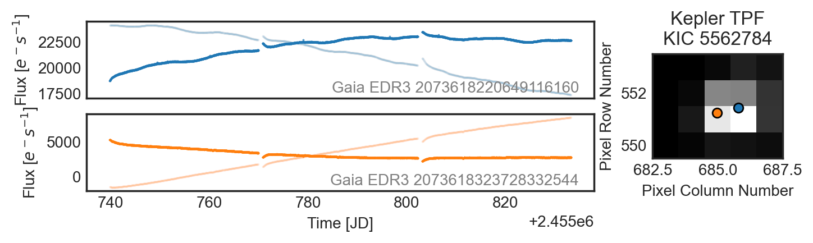

PSFMachine
PRF photometry with Kepler


PSFMachine is an open source Python tool for creating models of instrument effective Point Spread Functions (ePSFs), a.k.a Pixel Response Functions (PRFs). These models are then used to fit a scene in a stack of astronomical images. PSFMachine is able to quickly derive photometry from stacks of Kepler images and separate crowded sources.
Installation
pip install psfmachine
What's happening?
PSFMachine is doing a few things for you, it's
- using the Gaia archive to find all the sources in your images
- building a Pixel Response Function (PRF) model based on all the sources
- fitting the PRF to all the sources in an image stack, to find the best fitting flux of all sources, accounting for crowding and contamination
- creating custom apertures masks that follow the PRF profile to performed aperture photometry
- returning neat,
lightkurve.LightCurveobjects of all the sources in the images, with all the available meta data.
What does it look like?
After you run PSFmachine on a stack of images you can retrieve data like this. Here is an example of a very crowded Kepler Object of Interest KOI-608. This object looks like a planet transit, but there are actually two targets almost exactly overlapping each other! You can see this on the right hand side, where an image of the target is shown with the two stars identified by Gaia highlighted.

The output of PSFMachine is on the right hand side, and shows two light curves, one for each source. PSFMachine has separated the light curves of these sources, despite the fact that they are separated by less than a pixel, and the background source is over 2 magnitudes fainter.
We can flatten and fold these light curves at the transit period to find the following

In black we see the original Kepler light curve, which looks like an exoplanet transit. When using PSFMachine to split these two sources, we see that the transit is actually around the orange target (which is fainter), and has been significantly diluted. PSFMachine is able to separate these sources with high confidence, and rule out the blue source as the origin of the transit.
What can I use it on?
Currently PSFMachine is designed to work with Kepler data. The tool should work with K2 or TESS data, but some of our key assumptions may break, and so mileage may vary. More work will be done on PSFMachine in the future to better integrate these datasets.
If you'd like to try using PSFMachine on a more generic dataset, you can try the Machine class instead of the TPFMachine class to work with more generic data.
Example use
Below is an example script that shows how to use PSFMachine. Depending on the speed or your computer fitting this sort of model will probably take ~10 minutes to build 200 light curves. You can speed this up by changing some of the input parameters.
import psfmachine as psf
import lightkurve as lk
tpfs = lk.search_targetpixelfile('Kepler-16', mission='Kepler', quarter=12, radius=1000, limit=200, cadence='long').download_all(quality_bitmask=None)
machine = psf.TPFMachine.from_TPFs(tpfs, n_r_knots=10, n_phi_knots=12)
machine.fit_lightcurves()
Funding for this project is provided by NASA ROSES grant number 80NSSC20K0874.